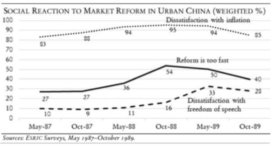
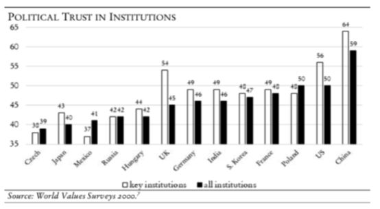
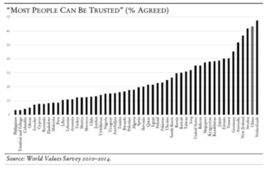
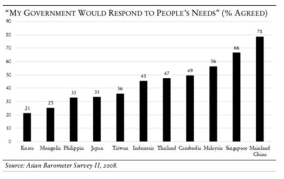

收录于合集
#政治态度 13 个
#民主与民主化 34 个
#比较政治学 121 个
文献来源：Wenfang Tang,The “Surprise” of Authoritarian Resilience in China, American Affairs , Vol.2, No.1(Spring 2018), pp.101-117.
作者简介：唐文方，著名华人政治学家，现任美国爱荷华大学政治学与国际问题研究斯坦利华夏讲席教授，政治学系主任。其研究兴趣为当代中国民意与政治变迁以及民意国际比较研究、多部学术专著和编著已由牛津大学出版社、剑桥大学出版社以及斯坦福大学出版社出版，在 American Journal of Political Science , Political Research Quarterly , Political Communication , Journal of Public Policy , China Quarterly , Journal of Contemporary China 等英文顶尖期刊发表多篇论文。
主页：https://www.tangwenfang.org/
苏联东欧八十年代末九十年代初的政治变革，使得西方学者和政界对中国的关注点转向了“民主化”，他们认为，只有中国的变化才能表明历史的真正“终结”。然而， 30年过去了，中国的发展越来越强势，西方对中国的研究关切不得不转向了中国政体为什么具有如此强的韧性。
以往学界对中国政治的研究都是秉持精英政治的视角，他们或是从《人民日报》用词的细微变化或是通过照片上领导人的排序来预测政策走向与人事变动，这一研究取向在今天仍然很重要，但民意研究的兴起为中国研究提供了更广阔的视野。
自从1978年改革开放之后，特别是八十年代中期城市改革开始后，中国领导人和学者越来越重视搜集民众意见的科学数据。1987年，国家经济体制改革委员会下属的中国社会调查系统第一次对城市人口进行了抽样调查，这是时任国务院总理亲自领导的智库。当时领导人交待该研究机构要通过一年两次的调查，跟踪监测在市场经济转轨期间中国城市民众的心理承受能力。在80年代的最后三年每年的五月到十月，中国社会调查系统先后进行了6次调查，其学术负责人杨冠三通过数据发现，民众对通货膨胀、失业率、社会风气和政府低效越来越不满。
在1991年到1992年间，体改所的调查又进行了两次，其中1992年的调查首次采用了美国社会综合调查中的一些题目，使得中国社会调查第一次有了与其他社会进行比较的可比性。此后由于主持人职务变动，国内的民意调查暂时中止。
在90年代中期后，民意调查再次在中国兴起。在美国统计学重镇密歇根大学获得政治学博士学位的政治科学家——沈明明教授回到北京大学，担任了中国国情研究中心的领导职务。自此以后，中国国情研究中心与国际学术界开展了广泛合作，进行了大量全国范围的社会调查，代表性的有1999年六城市调查、2004年的法治调查、2008年的中国调查、第4、5、6届世界价值观调查、2013-2015年的中国城市调查、以及多项地方性调查等。
中国国情研究中心最大的贡献是在2004年进行的法治调查中，其主持人沈明明教授与当时执教于耶鲁大学政治学系的李磊教授（Pierre Landry，编者注：现任香港中文大学政治与行政学系教授）首次采用空间抽样（spatial sampling）的方法。要知道，传统的抽样方法要借助户口登记，经常存在不全面、不准确以及需要向主管部门申请许可、沟通困难的劣势。以GPS（地理信息）为基础的空间抽样则可以避免这些困难并且更容易更准确地采集到当地居民，特别是针对北京、上海、广州、深圳这种外来人口高达30%-50%的特大城市具有独特的研究优势。自此以后，空间抽样成为中国学术界在抽取全国代表性样本必不可少的操作环节，这些样本成为研究中国政体韧性的重要依据。
在上世纪90年代，社会调查如雨后春笋般成长起来。政府许可并资助了一些大规模的全国性调查，诸如中山大学主持的中国劳动力动态调查、北京大学主持的中国家庭追踪调查、中国人民大学主持的中国社会综合调查、以及与海外学术界合作的世界价值观调查、亚洲民主动态调查和中国收入不平等调查等等。这些调查都借用了国际学术界既有的调查题目。如今这些调查在问卷设计、抽样、调查实施过程中的质量控制等层面都可以与世界其他国家一比高下，并且这些数据都可以通过申请来做研究使用。
民意研究对中国政体韧性研究产生了重要影响，这些研究挑战了西方学界长期以来对中国政治与社会现实信奉的基本理念，主要表现在以下五大“意外”发现：
1.八十年代末的社会不稳定并不是民主化的前兆，从体改委的调查数据中，可以发现许多有意思的现象，比如超过50%民众认为改革的速度过快，超过90%的受访者对通胀的担忧引起了对改革抵制的情绪。与此同时，民众对西式民主并不是太关心，从未超过三分之一，这些发现从一个方面解释了中国政体韧性的社会基础。

2.政体支持。中国民意调查最重要的发现是在世界范围内，中国民众的政治支持度居高不下，无论调查者从哪个角度提问，包括“对中央政府的支持”、“对执政党的信任”、“对中央领导人的信任”、“对核心政治机构的信心”、“对中国政治体制的拥护”、“对中央政府绩效的满意度”以及“对中国人身份的认同感”等。到目前为止的多项调查表明，中国民众对政权具有很高的政治支持度。然而，这一发现经常会受到“政治敏感”的质疑，这一观点认为受访者基于种种压力不会做出真实的回答。作者指出，这一观点在改革开放前可能是对的，但是在当下可能显得有些过时。因为Gary King、Jennifer Pan以及Margert Roberts三人最近通过对互联网的大数据分析，发现当局容忍一定程度的批判，只要这些批判不转化为集体行动。此外，列表实验（List Experiment）这一方法也被用于社会调查，结果显示只有8%-10%的受访者隐藏了他们对政府的不满。在去除了这些隐藏偏好后，中国民众的政治支持水平仍然位居世界前列，甚至超过了西式民主国家的水平，这无疑对中国的政体韧性起到了积极作用。

3.人际信任。这是关于中国研究第三大令人感到惊奇的地方，因为在过去20年，绝大多数中国民众认为“大多数人是可以相信的”。比如，根据第6波世界价值观调查，有60%的中国民众认为“大多数人是可以相信的”，仅次于荷兰的62%，高居世界第2位。相反，公认的美国、台湾、日本、韩国等民主社会对此类问题的赞同仅有30%左右。这一发现与传统的民主化理论相悖，因为经典的民主化研究认为较高的人际信任与社会资本才是民主制度建立的前提。通过多元回归分析，人际信任越高，政治支持度也就越高，因此人际信任为中国的政体韧性进一步提供了社会资本。

4.政治参与。根据2004年的法治调查，仅有4%的受访者表示在受到不公正对待时选择沉默而其余人选择诉诸其他方式来捍卫自己的权利。与之类似的是，在2012年的劳动力动态调查中，有近50%的受访者表示他们在过去2年里至少经历一次抗争活动。此外，人民大学主持的中国社会综合调查数据揭示了一种奇特的现象：对中央政府越信任的民众更愿意采取抗争。欧博文和李连江提出了“依法抗争”的概念，他们认为这种抗争最终将导致民众对民主的诉求。而本文作者却认为，这种参与是中国政治文化中必不可少的成分，它会导致民众对政府的更加信任，而不是对“民主”的诉求，因此是中国政体韧性的有机组成部分。
5.政府回应性。这是中国民意调查中第五大令人感到惊讶的地方。根据2008年亚洲民主动态调查结果显示，有77%的中国大陆民众表示政府对他们的需求有回应，而同期的中国台湾地区调查则显示只有33%的居民感到当局能回应他们的需求。与此同时，这一结果也比日本、菲律宾、蒙古和韩国等西式民主政体的国家高得多。此外，相比诺里斯、史天健、申道哲分别提到的经济发展绩效、媒体控制宣教以及儒家文化教化下避免挑战权威等影响因素，政府回应性在中国民众的政治支持中扮演着最重要的作用。因为从统计学上看，在同一回归模型中，当分别加入经济绩效、媒体控制、政治文化以及政府回应性四大变量时，政府回应性的作用最显著。但是这一结论也面临着挑战，比如有一种观点就认为中国民众本身的期待值比较低，当政府做出一点点回应之后他们就会“感恩戴德”。而西方社会中，政府对民众的回应被视为理所应当的，民众也会变得越来越乖张，索取更多的东西甚至变得“贪得无厌”。这一观点有其道理，但却忽视了民意的重要性，因为对政府回应性的评价是任何政府所希望得到的政治商品，而不管政府实际上作出了多少回应。此外，民主社会中的候选人在选举时对民众的需求有着较高的回应，但是一旦他们当选就会减少这种回应。对中国而言，虽然缺少竞争性选举，但是执政党努力践行“三个代表”这一政治理想，对抗议和不满者会有所回应。对此，童燕齐、雷少华解释道，中国政府会对抗议者和上访者提供大量补偿来维持社会稳定。因此，政府回应性是强化中国政体韧性的第五个原因。

总之，中国民意调查的兴起与随之而来的一系列发现挑战了西方政治学的一些经典理论，正如前文提及的五大“意外发现”。但是中国政治的研究仍然面临着几大困境：一方面，中国研究的数据越来越多，研究者在统计方法上的训练也越来越精，但是中国研究与比较政治学理论缺乏有力的衔接。西方对“民主—威权”的二分正在限制比较政治学研究的进一步发展，比如西方有关“民主”的“客观”划分与调查数据中民众对民主的主观感知存在越来越大的差距；另一方面，中国学者有时候过于强调中国中心主义，比如单纯强调中国历史文化的特殊性，这种做法限制了中国与西方的学术交流乃至话语对话；最后一个障碍是意识形态的偏见，比如有些西方媒体和学者经常会戴有色眼镜看待中国，他们的价值判断阻碍了他们对中国政治体系运作有效性与否的客观评价。本文作者认为，中国经验在西方政治学理论中不应当是一个“特例”，而应当成为“新常态”，这需要中外学者的共同努力。
编后记 ：对本文的摘编已经得到作者唐文方教授授权，我们在编译后将编译稿发给唐文方教授审阅，得到了唐教授在百忙之中的耐心指导和细致修改，在此政观编辑部全体同仁向唐教授的热情帮助表示衷心感谢！
政观编辑部
感谢您对学术公益品的支持！
微信扫一扫赞赏作者 __赞赏
已喜欢，对作者说句悄悄话
取消 __
发送给作者
发送
最多40字，当前共字
上一页 1/3 下一页
长按二维码向我转账
感谢您对学术公益品的支持！
受苹果公司新规定影响，微信 iOS 版的赞赏功能被关闭，可通过二维码转账支持公众号。